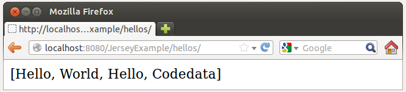
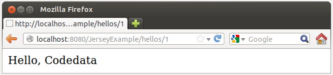
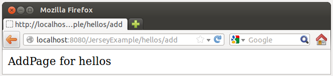

先前一直在談 Java 的 Web 應用程式，接下來在最後一堂課中，我們來談談 Java 在 Web 世界中，對 Web Services 的支援方式之一，也就是 Java EE 6 時納入的 JAX-RS（Java API for RESTful Web Services），剩下的時間不夠，因此設定一個簡單的目標，認識 REST，使用 JAX-RS 的參考實作（Reference Implementation, RI）之一 Jersey，並在 DVDLibrary 中使用 Jersey MVC。
簡介 REST
JAX-RS 的 R 代表 RESTful 縮寫，因此你要先瞭解 REST，REST 是一種軟體架構風格，全名是 REpresentational State Transfer，可譯為表徵狀態轉移，為 Roy Fielding 於2000年在他的論文 Architectural Styles and the Design of Network-based Software Architectures 中提及。REST 的架構由客戶端（Client）/伺服端（Server）組成，客戶端與伺服端之間的通訊機制是無狀態的（Stateless），客戶端對伺服端請求資源（Resource），伺服端的回應為資源的表徵（Representation），或稱為表現方式，也就是說，資源在 REST 中是可定址的（Addressed）概念，可能用檔案、文件、格式等來表現，代表資源目前或可能的狀態（State）。客戶端發出的請求，會獲得資源的最新狀態，如果一或多個請求獲取的狀態有了差異，客戶端就認定為發生了轉移（Transition），客戶端獲取的表徵，可能包括發生下一次狀態轉移的連結，請求方法與回應方式，是根據資源的表徵狀態將如何轉移（Transfer）而決定。
在 REST 的架構中，資源是可定址的（Addressed）概念，會有獨一無二的識別名稱（例如 Web 中的 URI 名稱），請求動作必須能表現出如何處理請求（例如 HTTP 中的 GET、POST、PUT、DELETE 等請求），而回應的內容型態與資源的概念是分離的，一個資源可以有多種內容型態來展現（狀態）。 在設計 REST 風格的架構時，許多人會提到 REST Triangle，例如 Talk:Representational state transfer 中的這張圖：

在 REST Triangle 中有名詞（Nouns）、動詞（Verbs）與內容型態（Content Types），分別用以代表資源獨一無二的識別、對資源進行操作的動作，以及資源的表徵（表現方式）。
以 HTTP 來說，URI 就是處於名詞角色，為資源定義了識別名稱，HTTP 具有一組有限的 GET、POST、PUT 與 DELETE 等方法來操作資源，而 HTTP 可以使用 content-type 標頭來定義資源表現方式。這些概念與 REST 概念不謀而合，REST 架構基於 HTTP 1.0，與 HTTP1.1 平行發展，符合 REST 最大實現就是 WWW，整個 Web 就像是個狀態機，藉由連結不斷改變狀態，不過 REST 架構的風格與特定協定無關，雖然最初是使用 HTTP 來描述，但不限於 HTTP。
更多 REST 的概念，可以參考 Representational state transfer。來看看 HTTP 如何實現 REST 概念，以基本 CRUD 來說，針對 DVD 記錄而言，設計的範例之一可以是：
- GET /dvds/
- GET /dvds/1
- GET /dvds/add
- POST /dvds/
- PUT /dvds/1
- DELETE /dvds/1
- 取得 DVD 清單（從 /dvds/ 資源取得表徵）
- 取得第一筆 DVD 記錄（從 /dvds/1 資源取得表徵）
- 取得新增 DVD 的頁面（從 /dvds/add 資源取得表徵）
- 發送一筆 DVD（將資料發送至 /dvds/ 作新增處理）
- 推送一筆 DVD（將資料發送至 /dvds/ 作新增或更新處理）
- 刪除一筆 DVD（刪除 /dvds/1 資源）
使用 JAX-RS
Java EE 6 起包含了對 RESful Web Service 的解決方案 JAX-RS，其架構於 Servlet 標準之上，JAX-RS 是個技術標準，各家廠商可以有自己的實作，在接下來的範例中，我們會使用 Jersey 是實作之一，關於 JAX-RS 與 Jersey 詳細的說明，可以參考 CodeData 上〈Java 與 REST 的邂逅〉系列，接下來我們直接從範例中瞭解如何使用 Jersey 來寫個簡單的 JAX-RS 範例。練習 18：使用 JAX-RS
建立一個 JerseyExample 專案目錄，並在其中新增一個 build.gradle 如下：apply plugin: 'tomcat'
buildscript {
repositories {
jcenter()
}
dependencies {
classpath 'org.gradle.api.plugins:gradle-tomcat-plugin:1.0'
}
}
repositories {
mavenCentral()
}
dependencies {
compile 'org.glassfish.jersey.containers:jersey-container-servlet-core:2.7'
def tomcatVersion = '7.0.11'
tomcat "org.apache.tomcat.embed:tomcat-embed-core:${tomcatVersion}",
"org.apache.tomcat.embed:tomcat-embed-logging-juli:${tomcatVersion}"
tomcat("org.apache.tomcat.embed:tomcat-embed-jasper:${tomcatVersion}") {
exclude group: 'org.eclipse.jdt.core.compiler', module: 'ecj'
}
}然後，在專案目錄中建立 src/main/webapp/WEB-INF 目錄，並在其中建立一個 web.xml 如下：
<?xml version="1.0" encoding="UTF-8"?>
<web-app version="3.0" xmlns="http://java.sun.com/xml/ns/javaee"
xmlns:xsi="http://www.w3.org/2001/XMLSchema-instance"
xsi:schemaLocation="http://java.sun.com/xml/ns/javaee
http://java.sun.com/xml/ns/javaee/web-app_3_0.xsd">
<filter>
<filter-name>jersey</filter-name>
<filter-class>org.glassfish.jersey.servlet.ServletContainer</filter-class>
<init-param>
<param-name>jersey.config.server.provider.packages</param-name>
<param-value>tw.codedata</param-value>
</init-param>
</filter>
<filter-mapping>
<filter-name>jersey</filter-name>
<url-pattern>/*</url-pattern>
</filter-mapping>
</web-app>
ServletContainerHttpServlet，本身也實作了 Filter 介面，因此可視實際需求，設定為 Servlet 或 Filter 使用。JAX-RS 可使用標註進行組態設定，jersey.config.server.provider.packages 初始參數用來指定可掃描哪個套件來獲得組態資訊，根據這邊的設定，所有的 URI 請求，都會經由 ServletContainer 處理。
接下來請在專案目錄中建立 src/main/java/tw/codedata 目錄，並於其中撰寫 Hellos.java 如下：
package tw.codedata;
import java.util.*;
import javax.ws.rs.*;
@Path("/hellos")
public class Hellos {
private List<String> hellos = Arrays.asList("Hello, World", "Hello, Codedata");
@GET
public String list() {
return hellos.toString();
}
@GET
@Path("/{id}")
public String show(@PathParam("id") int id) {
return hellos.get(id);
}
@GET
@Path("/add")
public String addPage() {
return "AddPage for hellos";
}
@POST
public String add() {
return "add a hello";
}
}
Hellos@Path 設定了資源位址，如果後續設定 @GET、@POST 等時沒有再指定 @Path，就會使用 Hellos 類別上頭的 @Path 設定作為資源位址，@Path 可以指定路徑參數（Path parameter），可以用 @PathParam 將路徑參數指定給方法參數，@GET、@POST 表明了，何種請求可以呼叫對應的方法。
有關更多標註的說明，可以參考〈Java 與 REST 的邂逅（二）JAX-RS 核心 Annotation〉。 接著在專案目錄底下，執行
gradle tomcatRunWar，使用瀏覽器請求，應該可以看到以下畫面：


更多 JAX-RS 的相關說明，可以參考 CodeData 的 JAX-RS 相關文章，下一篇我們要先來認識 Jersey 如何實作 MVC，以便在 DVDLibrary 中使用。